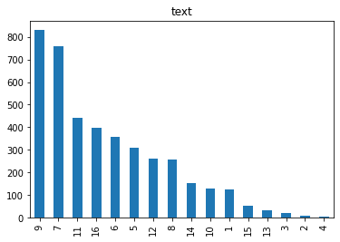

Code
import json
import requests
import csv
import pandas as pd
from datetime import datetime
import seaborn as sns
import matplotlib.pyplot as plt
print("Import des librairies nécessaires")Import des librairies nécessairesPotentialités et extensions d’une édition numérique
Depuis 2014, la Chaire de Recherche du Canada sur les Écritures Numériques porte le projet d’édition numérique collaborative de l’Anthologie grecque. Ce vaste corpus de la littérature grecque a traversé le temps et s’est inscrite sur nombreux de support et media. Au sein de la CRCEN seulement, plusieurs plateforme ont hébergé son contenu.
Le projet se trouve désormais sur la plateforme Anthologiagraeca. Celui-ci a bénéficié de l’aide d’environ 150 éditeur·ice·s qui opérèrent 12300 actions sur la plateforme (au 20 avril 2023).
Ces contributions sont en réalité des data, que nous pouvons désormais manipuler et qui nous permettent d’appréhender l’Anthologie d’un autre œil, par le biais de visualisations notamment. Celles-ci ont un double avantage :
Plus la plateforme se remplit, plus il devient complexe d’avoir une vision d’ensemble sur l’état d’édition de la plateforme. L’encodage des données selon les standards de l’édition numérique et l’implémentation de l’API nous permettent de visualiser facilement ce qu’il reste à faire pour chacun des livres de l’Anthologie grecque, ou du moins de discerner des priorités.
La question du statut ou du degré d’édition des épgirammes de la plateforme est décrit ici.
L’Anthologie ne peut se concevoir que comme une œuvre linéaire. En effet, celle-ci est un regroupement d’hétérogènes, dialoguant entre eux par des liens, qu’ils soient tacites ou clairement marqués.
Une édition numérique comme celle menée à la CRCEN permet une lecture plus cyclique du corpus, et les visualisations proposées ci-dessous offrent des synthèses variées des différentes facette du l’œuvre.
Ce site est écrit dans JupyterLab, généré en HTML avec Quarto, déployé sur GitHub Pages et mis à jour quotidiennement grâce à GitHub Actions. Le code est public.
Dans la même optique, chaque figure ci-dessous est accompagnée de son code.
Il convient tout d’abord d’importer les bibliothèques qui nous seront utiles tout le long de notre démonstration :
import json
import requests
import csv
import pandas as pd
from datetime import datetime
import seaborn as sns
import matplotlib.pyplot as plt
print("Import des librairies nécessaires")Import des librairies nécessairesAvant toute chose, récupérons les données de l’API, en tenant compte qu’elle est paginée.
Grâce à GitHub action, nous faisons tourner ce Jupyter Notebook une fois par jour afin de mettre à jour les visualisations avec les nouvelles données encodées.
Le code ci-dessous nous permet de récupérer les données de l’API, plus précisément l’endpoint passages qui nous intéresse.
Nos données sont désormais stockées dans la liste api_data.
api_data = []
pagination = True
c = 0
while pagination == True:
c = c+1
param = {'page': c,}
basic_url = 'https://anthologiagraeca.org/api/'
endpoint = "passages"
r = requests.get(basic_url + endpoint,param).json()
if r['next'] is None:
pagination = False
for item in r['results']:
api_data.append(item)Cette commande nous a permis de stocker toutes les données de l’API dans la liste api_data.
Nous pouvons facilement vérifier cela en vérifiant la longueur de la liste : nous devrions obtenir 4134 résultats : le nombre d’épigrammes sur la plateforme.
print("La liste api_data contient",len(api_data), "entrées")La liste api_data contient 4134 entréesVoyons également à quoi ressemble la structure des données :
api_data[1]{'id': 438,
'book': {'url': 'https://anthologiagraeca.org/api/books/9/', 'number': 1},
'fragment': 2,
'sub_fragment': '',
'url': 'https://anthologiagraeca.org/api/passages/urn:cts:greekLit:tlg7000.tlg001.ag:1.2/',
'manuscripts': ['http://digi.ub.uni-heidelberg.de/iiif/2/cpgraec23%3A049.jpg/pct:12.466722876141418,19.26407429979108,58.60226718012693,8.23287268450456/full/0/default.jpg'],
'texts': [{'url': 'https://anthologiagraeca.org/api/texts/1627/',
'language': 'grc',
'text': '\n θεῖος Ἰουστῖνος, Σοφίης πόσις, ᾧ πόρε Χριστὸς\n πάντα διορθοῦσθαι, καὶ κλέος ἐν πολέμοις,\nμητρὸς ἀπειρογάμοιο δόμον σκάζοντα νοήσας,\n σαθρὸν ἀποσκεδάσας τεῦξέ μιν ἀσφαλέως.\n'},
{'url': 'https://anthologiagraeca.org/api/texts/1628/',
'language': 'eng',
'text': 'Inscribed on the Apse of Blachernae\n\nThe divine Justin, the husband of Sophia, to whom Christ granted the gift of restoring everything, and glory in war, finding that the temple of the Virgin Mother was tottering, took the decayed part to pieces and built it up again securely. '},
{'url': 'https://anthologiagraeca.org/api/texts/1629/',
'language': 'fra',
'text': "Gravé sur les absides des Blachernes. \n\nLe divin Justin, l'époux de Sophie, à qui le Christ a accordé le rétablissement universel de l'ordre et la gloire dans les combats, voyant chanceler la demeure de la Mère immaculée, en a fait abattre les bâtiments qui tombaient en ruines et les a fait reconstruire solidement. "},
{'url': 'https://anthologiagraeca.org/api/texts/1630/',
'language': 'por',
'text': 'Na abóboda de Blaquerna\n\nO divino Justino, esposo de Sofia, a quem Cristo concedeu o dom de tudo restaurar e a glória em combates, percebendo estar combalida a casa da Mãe Imaculada, demoliu o danificado e reconstruiu solidamente. '}],
'authors': [{'url': 'https://anthologiagraeca.org/api/authors/6/',
'tlg_id': '',
'names': [{'name': 'anónimo', 'language': 'spa'},
{'name': 'anonimo', 'language': 'ita'},
{'name': 'anonyme', 'language': 'fra'},
{'name': 'anónimo', 'language': 'por'},
{'name': 'anonymus', 'language': 'lat'},
{'name': 'anonymous', 'language': 'eng'}]}],
'cities': [],
'keywords': ['https://anthologiagraeca.org/api/keywords/116/',
'https://anthologiagraeca.org/api/keywords/200/'],
'scholia': [{'book': 1,
'fragment': 2,
'sub_fragment': '',
'number': 1,
'url': 'https://anthologiagraeca.org/api/scholia/urn:cts:greekLit:tlg5011.tlg001.sag:1.2.1/'},
{'book': 1,
'fragment': 2,
'sub_fragment': '',
'number': 2,
'url': 'https://anthologiagraeca.org/api/scholia/urn:cts:greekLit:tlg5011.tlg001.sag:1.2.2/'}],
'comments': [],
'external_references': [{'title': 'Église Sainte-Marie des Blachernes',
'url': 'https://fr.wikipedia.org/wiki/%C3%89glise_Sainte-Marie-des-Blachernes'}],
'internal_references': [],
'media': []}Nous pouvons en outre stocker ces données dans un fichier .json. Vu que ces données sont retéléchargées chaque jour, nous ajoutons un paramètre pour renommer notre fichier en fonction du jour de téléchargement.
with open(f'api_json_{datetime.now().date()}.json', 'w') as js:
json.dump(api_data, js)Pandas est une bibliothèque Python permettant de manipuler et d’analyser des données, tout en proposant de simples visualisations.
Si le panda üêº se nourrit de bambou üåø, notre Panda üêç se nourrit plut√¥t de tableaux .csv üñ•
Nous commencerons par créer un premier fichier .csv, intitulé main_info.csv dont les colonnes reprendront les informations suivantes :
header = ['URL', 'epigram', 'book', 'manuscripts', 'texts', 'keywords', 'scholia', 'comments']
with open('main_info.csv', mode='w', newline='', encoding='utf-8') as file:
writer = csv.DictWriter(file, fieldnames=header)
writer.writeheader()
for row in api_data:
url = row.get('url', '')
epigram = url.split('ag:')[1].split('/')[0] if 'ag:' in url else ''
book = row.get('book', {}).get('number')
manuscripts = True if row.get('manuscripts') else False
texts = len(row.get('texts', []))
keywords = len(row.get('keywords', []))
scholia = len(row.get('scholia', []))
comments = len(row.get('comments', []))
writer.writerow({
'URL': url,
'epigram': epigram,
'book': book,
'manuscripts': manuscripts,
'texts': texts,
'keywords': keywords,
'scholia': scholia,
'comments': comments
})Le fichier main_info.csv a été créé ; nous pouvons désormais le lire et le manipuler. Commençons par en afficher un échantillon aléatoire de 5 lignes :
api_data_df = pd.read_csv('main_info.csv', delimiter=",")
api_data_df.sample(5)| URL | epigram | book | manuscripts | texts | keywords | scholia | comments | |
|---|---|---|---|---|---|---|---|---|
| 393 | https://anthologiagraeca.org/api/passages/urn:... | 5.236 | 5 | True | 3 | 4 | 2 | 0 |
| 3608 | https://anthologiagraeca.org/api/passages/urn:... | 14.74 | 14 | False | 3 | 0 | 0 | 0 |
| 2816 | https://anthologiagraeca.org/api/passages/urn:... | 11.16 | 11 | True | 3 | 9 | 0 | 0 |
| 968 | https://anthologiagraeca.org/api/passages/urn:... | 7.140 | 7 | True | 4 | 10 | 3 | 1 |
| 1360 | https://anthologiagraeca.org/api/passages/urn:... | 7.527 | 7 | True | 4 | 6 | 2 | 0 |
Dans cette section, nous nous intéresserons principalement aux nombre de textes qu’ont les épigrammes sur notre plateforme.
Commençons dès lors par afficher dans notre table les données qui nous intéressent.
api_data_df[['book','epigram','texts']]| book | epigram | texts | |
|---|---|---|---|
| 0 | 1 | 1.1 | 4 |
| 1 | 1 | 1.2 | 4 |
| 2 | 1 | 1.3 | 4 |
| 3 | 1 | 1.4 | 4 |
| 4 | 1 | 1.5 | 4 |
| ... | ... | ... | ... |
| 4129 | 16 | 16.384 | 2 |
| 4130 | 16 | 16.385 | 2 |
| 4131 | 16 | 16.386 | 2 |
| 4132 | 16 | 16.387 | 2 |
| 4133 | 16 | 16.388 | 2 |
4134 rows × 3 columns
Avant d’aller plus loin, nous pouvons déjà nous rendre compte et visualiser (sous plusieurs formes différentes) combien de textes ont les épigrammes:
api_data_df['texts'].value_counts()3 1563
1 888
4 877
2 553
5 176
6 55
7 9
8 6
9 4
0 2
11 1
Name: texts, dtype: int64La plupart des épigrammes, 1598, ont trois textes ; une épigramme possède même 11 textes ! Par contre, 888 épigrammes n’ont encore qu’un seul texte. Pour connaitre les épigrammes dont il est question, nous pouvons appliquer un filtre, comme ceci :
eleven_texts_filter = api_data_df['texts'] == 11
one_text_filter = api_data_df['texts'] == 1api_data_df[eleven_texts_filter]| URL | epigram | book | manuscripts | texts | keywords | scholia | comments | |
|---|---|---|---|---|---|---|---|---|
| 1912 | https://anthologiagraeca.org/api/passages/urn:... | 9.70 | 9 | True | 11 | 0 | 1 | 0 |
api_data_df[one_text_filter]| URL | epigram | book | manuscripts | texts | keywords | scholia | comments | |
|---|---|---|---|---|---|---|---|---|
| 133 | https://anthologiagraeca.org/api/passages/urn:... | 3.1 | 3 | False | 1 | 0 | 2 | 0 |
| 134 | https://anthologiagraeca.org/api/passages/urn:... | 3.2 | 3 | False | 1 | 0 | 0 | 0 |
| 135 | https://anthologiagraeca.org/api/passages/urn:... | 3.3 | 3 | False | 1 | 0 | 0 | 0 |
| 136 | https://anthologiagraeca.org/api/passages/urn:... | 3.4 | 3 | False | 1 | 0 | 0 | 0 |
| 137 | https://anthologiagraeca.org/api/passages/urn:... | 3.5 | 3 | False | 1 | 0 | 0 | 0 |
| ... | ... | ... | ... | ... | ... | ... | ... | ... |
| 4121 | https://anthologiagraeca.org/api/passages/urn:... | 16.376 | 16 | False | 1 | 0 | 0 | 0 |
| 4122 | https://anthologiagraeca.org/api/passages/urn:... | 16.377 | 16 | False | 1 | 0 | 0 | 0 |
| 4123 | https://anthologiagraeca.org/api/passages/urn:... | 16.378 | 16 | False | 1 | 0 | 0 | 0 |
| 4124 | https://anthologiagraeca.org/api/passages/urn:... | 16.379 | 16 | False | 1 | 0 | 0 | 0 |
| 4125 | https://anthologiagraeca.org/api/passages/urn:... | 16.380 | 16 | False | 1 | 0 | 0 | 0 |
888 rows × 8 columns
Mais le but de notre expérience est de visualiser nos données ; toujours avec Pandas dans un premier temps, affichons combien de textes ont les épigrammes :
plt.show(api_data_df['texts'].value_counts().plot(kind='bar'))
plt.show(api_data_df['texts'].value_counts().plot(kind='pie'))Combien de textes ont les épigrammes?
Pour résumer, quel est le nombre moyen de textes par épigramme ? Et quelle est la médiane de textes par épigramme ?
print("les épigrammes ont en moyenne", api_data_df['texts'].mean(), "textes")
print("la médiane des textes par épigramme est de", api_data_df['texts'].median())les épigrammes ont en moyenne 2.7960812772133528 textes
la médiane des textes par épigramme est de 3.0Quelle est le nombre moyen de textes par épigramme selon les livres ?
api_data_df[['book', 'texts']].groupby('book').mean()| texts | |
|---|---|
| book | |
| 1 | 3.373984 |
| 2 | 2.000000 |
| 3 | 1.000000 |
| 4 | 4.800000 |
| 5 | 3.819355 |
| 6 | 3.030641 |
| 7 | 4.036939 |
| 8 | 3.364341 |
| 9 | 2.098676 |
| 10 | 1.283465 |
| 11 | 3.033860 |
| 12 | 3.565385 |
| 13 | 1.250000 |
| 14 | 1.258278 |
| 15 | 1.019231 |
| 16 | 1.060606 |
Visualisons ce tableau dans un graphique qui nous indique le nombre moyen qu’ont les épigrammes de chacun des livres :
api_data_df[['book', 'texts']].groupby('book').mean().plot(kind='bar', title="Moyenne des textes par épigrammes dans les livres de l'AG")<AxesSubplot:title={'center':"Moyenne des textes par épigrammes dans les livres de l'AG"}, xlabel='book'>Dans une même idée, nous pouvons montrer le nombre d’épigrammes par livre…
api_data_df['book'].value_counts().plot.bar(title='text')<AxesSubplot:title={'center':'text'}>
book_counts = api_data_df['book'].value_counts()
book_counts_sorted = book_counts.sort_values(ascending=True)plt.bar(book_counts_sorted.index, book_counts_sorted)
plt.xlabel('Livre')
plt.ylabel('Compte')
plt.title("Combien d'épigrammes a chaque livre")
plt.xticks(rotation=90) # Pour faire pivoter les étiquettes de l'axe x si nécessaire
plt.show()mykw = []
for i in range(len(data_from_API)):
book_ = data_from_API[i]['book']['number']
count_ = len([i for i in data_from_API[i]['keywords']])
url_ = data_from_API[i]['url']
mykw.append({'book':book_,'count':count_, 'url':url_})
mykw_df = pd.DataFrame(mykw)#df_ = mykw_df.groupby('count',as_index=False)['url'].agg(list)
#df_[df_['count']==53]['url'].tolist()def myapply(df):
#print(df['count'].value_counts())
mylist = [0,1,2,5,10,60]
mycounts = pd.cut(df['count'], mylist, right=False, labels=["0","1","2-4","5-9","10-59"]).value_counts()
mydict = mycounts.to_dict()
mydict['book'] = df['book'].values[0]
return pd.Series(mydict).to_frame().T
dict_list = mykw_df.groupby('book',as_index=False).apply(myapply)
count_df = dict_list.reset_index(drop=True)
count_df = count_df.set_index('book')
count_df_ = count_df[["0","1","2-4","5-9","10-59"][::-1]]
import numpy as np
#count_df_.loc[:] = np.log(count_df_.values)
plt.figure(dpi=100,figsize=(8,5))
sns.heatmap(count_df_.T,annot=True,fmt='d')<AxesSubplot:xlabel='book'>print(mykw_df['count'].value_counts())0 1909
1 378
4 330
7 291
6 269
8 239
2 168
5 167
9 152
3 85
10 76
11 35
12 20
14 5
13 3
20 1
19 1
53 1
16 1
18 1
15 1
17 1
Name: count, dtype: int640
1
2-4
5-9
10-60-50# Dictionnaire pour stocker les compteurs de chaque livre
compteurs_livres = {}
# Comptage des éléments par livre
for element in data_from_API:
url_livre = element['book']['number']
# Vérification de l'existence de la clé dans le dictionnaire
if url_livre in compteurs_livres:
# Incrémentation du compteur
compteurs_livres[url_livre] += 1
else:
# Initialisation du compteur
compteurs_livres[url_livre] = 1
# Affichage des résultats
for url_livre, compteurs in compteurs_livres.items():
print(f"Livre : {url_livre}, Nombre d'éléments : {compteurs}")Livre : 1, Nombre d'éléments : 123
Livre : 2, Nombre d'éléments : 10
Livre : 3, Nombre d'éléments : 19
Livre : 4, Nombre d'éléments : 5
Livre : 5, Nombre d'éléments : 310
Livre : 6, Nombre d'éléments : 359
Livre : 7, Nombre d'éléments : 758
Livre : 8, Nombre d'éléments : 258
Livre : 9, Nombre d'éléments : 831
Livre : 10, Nombre d'éléments : 127
Livre : 11, Nombre d'éléments : 443
Livre : 12, Nombre d'éléments : 260
Livre : 13, Nombre d'éléments : 32
Livre : 14, Nombre d'éléments : 151
Livre : 15, Nombre d'éléments : 52
Livre : 16, Nombre d'éléments : 396# create a new plot with default tools, using figure
p = figure(width=400, height=400)
# add a circle renderer with x and y coordinates, size, color, and alpha
p.hex(list(compteurs_livres.keys()), list(compteurs_livres.values()), size=15, line_color="navy", fill_color="orange", fill_alpha=0.5)
show(p) # show the resultsNous pouvons également représenter cela dans un Pie Chart interactif !
from math import pi
import pandas as pd
from bokeh.palettes import Category20c
from bokeh.transform import cumsum
from bokeh.models import Legend, Wedge, ColumnDataSource
x = compteurs_livres
data = pd.Series(x).reset_index(name='value').rename(columns={'index':'livre'})
data['color'] = Category20c[len(x)]
# represent each value as an angle = value / total * 2pi
data['angle'] = data['value']/data['value'].sum() * 2*pi
p = figure(height=450, title="Nombre d'épigrammes par livre", toolbar_location=None,
tools="hover", tooltips="@livre: @value")
p.wedge(x=0, y=1, radius=0.4,
# use cumsum to cumulatively sum the values for start and end angles
start_angle=cumsum('angle', include_zero=True), end_angle=cumsum('angle'),
line_color="white", fill_color='color', legend_field='livre', source=data)
p.axis.axis_label=None
p.axis.visible=False
p.grid.grid_line_color = None
show(p)items=[]
for i in range(len(data_from_API)):
id_ = data_from_API[i]['id']
langs_ = [i['language'] for i in data_from_API[i]['texts']]
items.append((id_,langs_))my_df=pd.DataFrame(items,columns=['id','langs'])
my_df=my_df.explode('langs')
my_langs = my_df['langs'].value_counts()
#print(my_df[my_df['langs']=='deu'])for x in data_from_API:
if x['id']==4049:
print(x['url'])my_langs_ = my_langs.rename_axis('Langue de Traduction').reset_index(name='Nombre de textes')
#print(my_langs_)
plt.figure(dpi=75)
sns.barplot(data=my_langs_,x='Langue de Traduction',y='Nombre de textes',palette="hls")